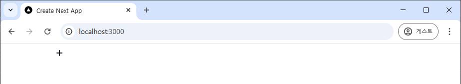
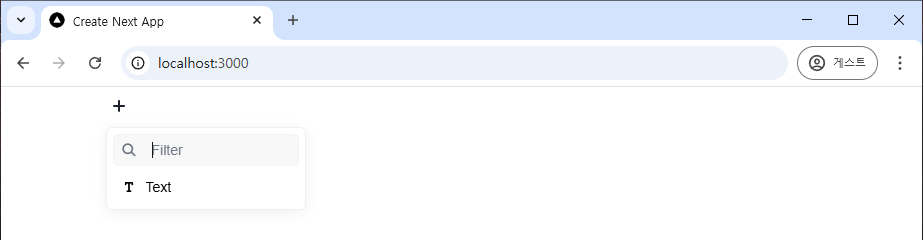
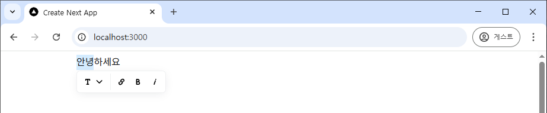
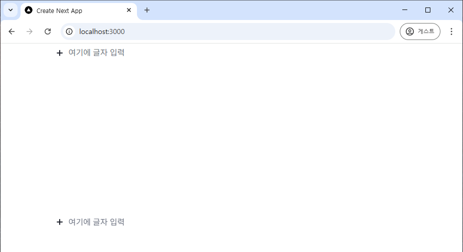
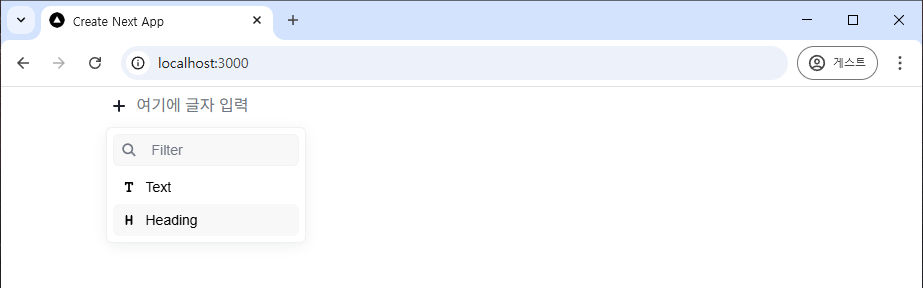
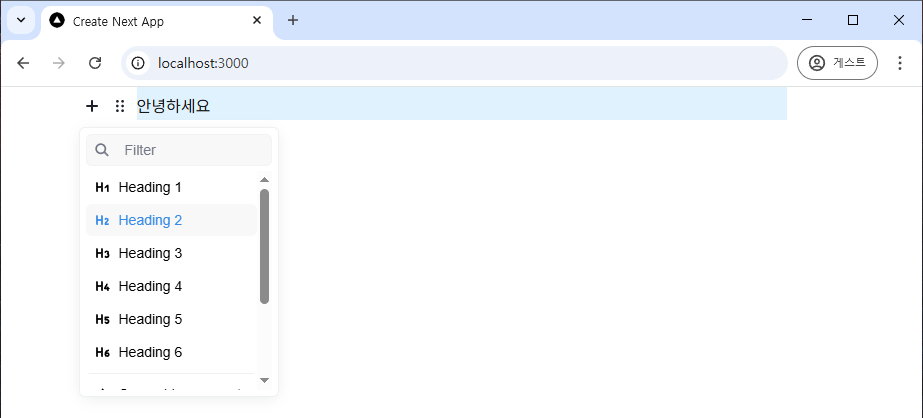
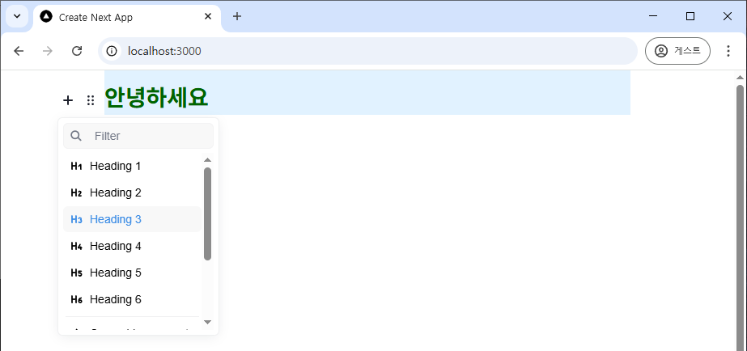
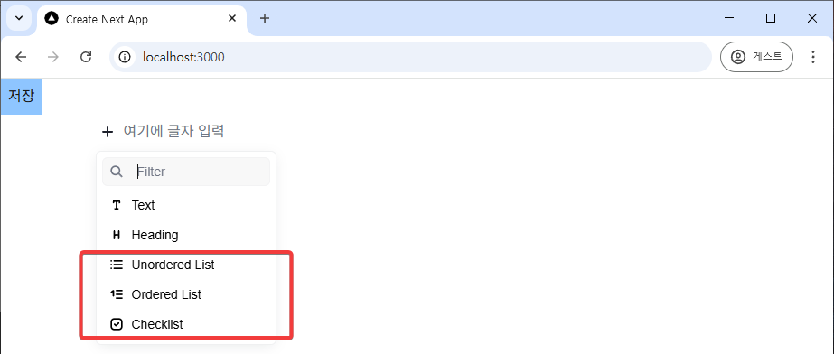
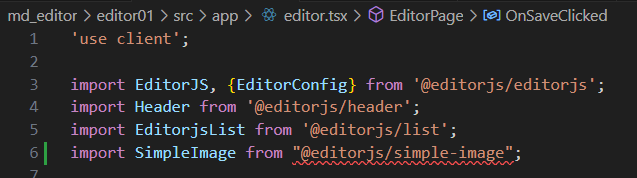
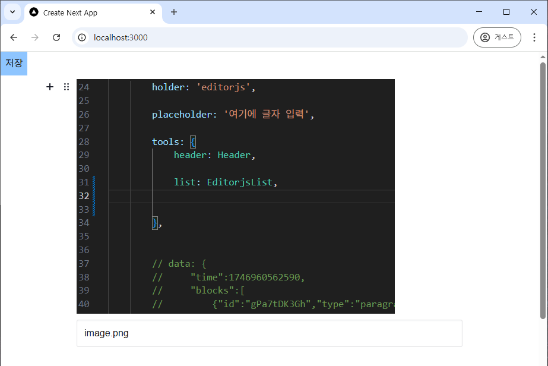

Editor.js
- 노션 스타일의 블록형 에디터
- 오픈소스
- 홈페이지: https://editorjs.io
- 작성일: 2025. 5. 11.
- 최종수정일: 2025. 5. 11.
설치
editor.js는 다양한 플러그인을 제공한다. 우선 본체만 설치.
npm install @editorjs/editorjs
가장 간단한 샘플
page.tsx
죄다 지우고 아래와 같이 바꾼다.
// app/page.tsx
import EditorPage from "./editor";
export default function Home() {
return (
<div>
<EditorPage />
</div>
);
}
editor.tsx
Editor.js를 정의한 클라이언트 컴포넌트
// app/editor.tsx
"use client";
import EditorJS from '@editorjs/editorjs';
import './globals.css';
export default function EditorPage()
{
const editor = new EditorJS('editorjs');
return(
<div>
<div id="editorjs" />
</div>
);
}
vs 터미널에서 npm run dev로 실행하면 터미널에 에러가 잔뜩 나오는데,
실행한 후에 화면의 빈 곳을 마우스로 움직이다 보면

이렇게 + 기호가 나오고 노션처럼 글을 쓸 수 있다.

아직까지는 text만 추가할 수 있다.
혹시 + 기호가 안나오면
// app/editor.tsx
const editor = new EditorJS('editorjs');
의 editorjs 부분의 값을 바꾸고 다시 원래대로 돌려놓으면서 테스트해 보자.
editorjs가 holder인데, 이 값이랑
// app/editor.tsx
<div id="editorjs" />
이 부분의 id 값이 같아야 한다.

블록을 잡으면 진하게 등을 설정할 수 있게 된다.
configuration
EditorJS() 에 문자열을 넘기면 div의 id에 넣어주는 holder가 되지만 이렇게는 쓰지 않고 다양한 설정들을 담아 넣어줘야 한다.
// app/editor.tsx
import EditorJS, {EditorConfig} from '@editorjs/editorjs';
EditConfig를 추가하고 이 타입 객체를 EditorJS() 안에 파라미터로 넣어준다.
// app/editor.tsx
const editor = new EditorJS(
{
holder: 'editorjs'
}
);
이런 식으로 값을 넣어줄 수도 있지만, 아래처럼 EditorConfig 객체를 만들어 넣어주겠다.
// app/editor.tsx
const editorConfig: EditorConfig =
{
holder: 'editorjs'
}
const editor = new EditorJS(editorConfig);
이제 holder와 같은 옵션을 눌려주며 에디터를 설정해 간다.
// app/editor.tsx
const editorConfig: EditorConfig =
{
holder: 'editorjs',
placeholder: '여기에 글자 입력',
}
const editor = new EditorJS(editorConfig);

heading 플러그인
먼저 header 플러그인을 설치하자.
npm install @editorjs/header
// app/editor.tsx
import Header from '@editorjs/header';
아래와 같이 설정하면 H1, H2 등을 설정할 수 있게 된다.
// app/editor.tsx
const editorConfig: EditorConfig =
{
holder: 'editorjs',
placeholder: '여기에 글자 입력',
tools: {
header: Header
}
};

이렇게 Heading을 설정할 수 있다.

.. 3줄인 버튼을 누르면 Heading 1 ~ Heading 6 까지 선택할 수 있는데, 이걸 바꿔도 글자 크기가 바뀌지 않는다. next.js에서 tailwind css를 사용하기 때문이다.
app/globlas.css 파일안에 h1 ~ h6까지 정의해 줘야 그게 여기에 반영된다.
/* app/globlas.css */
h1 {
color: #333;
font-size: 2.5em;
font-weight: bold;
margin-bottom: 0.5em;
}
h2 {
color: steelblue;
font-size: 2em;
font-weight: bold;
border-bottom: 2px solid steelblue;
margin-top: 1em;
}
h3 {
color: darkgreen;
font-size: 1.75em;
font-weight: bold;
}
h4 {
color: purple;
font-size: 1.5em;
font-weight: bold;
}
h5 {
color: orange;
font-size: 1.25em;
font-weight: bold;
}
h6 {
color: gray;
font-size: 1em;
font-weight: bold;
}

이렇게 글자 크기가 바뀐다.
데이터 저장
// app/editor.tsx
return(
<div>
<button onClick={OnSaveClicked} className='bg-blue-300 p-2'>저장</button>
<div id="editorjs" />
</div>
);
이렇게 저장 버튼을 넣으면 저장할 수 있게 되고, OnSaveClicked 핸들러는
// app/editor.tsx
const OnSaveClicked = async () =>
{
const article = await editor.save();
console.log("article = " , article);
}
와 같이 해 준다. 전체 코드는 다음과 같다.
// app/editor.tsx
"use client";
import EditorJS, {EditorConfig} from '@editorjs/editorjs';
import Header from '@editorjs/header';
import './globals.css';
export default function EditorPage()
{
const OnSaveClicked = async () =>
{
const article = await editor.save();
console.log("article = " , article);
}
const editorConfig: EditorConfig =
{
holder: 'editorjs',
placeholder: '여기에 글자 입력',
tools: {
header: Header
}
};
const editor = new EditorJS(editorConfig);
return(
<div>
<button onClick={OnSaveClicked} className='bg-blue-300 p-2'>저장</button>
<div id="editorjs" />
</div>
);
}
여기서 나온 article의 구조는 다음과 같다.
// app/editor.tsx
const OnSaveClicked = async () =>
{
const article = await editor.save();
console.log("article = " , article);
const json = JSON.stringify(article)
console.log("json = " , json);
}
이 코드로 본 결과는 아래와 같고, 이 값을 DB에 저장하면 된다.
{
"time":1746960562590,
"blocks":[
{"id":"gPa7tDK3Gh","type":"paragraph","data":{"text":"안녕하세요."}}
],
"version":"2.31.0-rc.7"
}
데이터 읽어오기
// app/editor.tsx
const editorConfig: EditorConfig =
{
...생략...
data: {
"time":1746960562590,
"blocks":[
{"id":"gPa7tDK3Gh","type":"paragraph","data":{"text":"안녕하세요."}}
],
"version":"2.31.0-rc.7"
}
};
이렇게 data 항목에 값을 위 article 에서 본 형식으로 값을 세팅하면 컴퍼넌트가 나오면서 이 값이 보여진다.
리스트 플러그인
설치
npm install @editorjs/list
아래와 같이 모듈을 사용한다.
// app/editor.tsx
import EditorjsList from '@editorjs/list';
이제 list를 추가한다.
tools: {
header: Header,
list:
{
EditorjsList
}
},

이미지 플러그인
paste를 통해서만 이미지를 추가할 수 있는 간단 버전.
editor.tsx:19 json = {"time":1746963981205,"blocks":[{"id":"CMI0iKaAeY","type":"image","data":{"url":"
별도의 이미지 전송 처리같은 거 없이 위에 보이는 것처럼 이미지를 base64 인코딩해서 전송할 수 있어 빠르게 처리할 수 있다. 단점은 파일선택이 불가능하고 paste를 통한 이미지 추가만 가능하다는 거.
설치
npm install @editorjs/simple-image
플러그인 임포트
// app/editor.tsx
import SimpleImage from "@editorjs/simple-image";
// app/editor.tsx
tools: {
header: Header,
list: EditorjsList,
image: SimpleImage
},
tools에 image를 추가한다.

모듈을 제대로 설치해도 이렇게 빨간색으로 나오는데 기능은 동작한다.

문제 해결
F5를 누르면 안나와서 <div id="editorjs" />의 id 값을 바꾸면서 테스트해야 하던 문제 & 한 번에 3줄씩 나오던 문제
// app/editor.tsx
import React, {useEffect} from 'react';
editor 설정 부분을
useEffect(() =>
{
const editor = new EditorJS(editorConfig);
}, []);
과 같이 고쳐 주고 useRef() 훅도 사용해야 한다.
그리고 SSR을 막는 처리도 해줘야 한다.
이렇게 하려면 app/editor_c.tsx 파일을 만들고 그 안에 다음과 같이 코딩한다.
// app/editor_c.tsx
// SSR 을 막고 client에서만 돌아가도록 한다.
'use client';
import dynamic from 'next/dynamic';
import React from 'react';
const DynamicEditor = dynamic(
() => import('./editor'), // Editor 컴포넌트 경로
{ ssr: false } // 서버 측 렌더링 비활성화
);
const MyPage: React.FC = () => {
return (
<DynamicEditor />
);
};
export default MyPage;
여기서 ./editor.tsx 를 import 해서 사용하니, 이제 이 page.tsx에서 이 파일을 읽어 사용하도록 만들어줘야 한다.
// app/page.tsx
import MyPage from "./editor_c";
// import EditorPage from "./editor";
export default function Home() {
return (
<div>
<MyPage />
{/* <EditorPage /> */}
</div>
);
}
build 에러 해결
빌드하면 src/editor.tsx 파일에서 에러가 난다.
PS E:\github-stuousk\nextjstest\md_editor\editor01> npm run build
> editor01@0.1.0 build
> next build
▲ Next.js 15.3.2
Creating an optimized production build ...
✓ Compiled successfully in 0ms
Linting and checking validity of types ..Failed to compile.
Linting and checking validity of types ..../src/app/editor.tsx:7:25
Type error: Could not find a declaration file for module '@editorjs/simple-image'. 'E:/github-stuousk/nextjstest/md_editor/editor01/node_modules/@editorjs/simple-image/dist/simple-image.mjs' implicitly has an 'any' type.
Try `npm i --save-dev @types/editorjs__simple-image` if it exists or add a new declaration (.d.ts) file containing `declare module '@editorjs/simple-image';`
5 | import Header from '@editorjs/header';
6 | import EditorjsList from '@editorjs/list';
> 7 | import SimpleImage from '@editorjs/simple-image';
| ^
8 |
9 | import './globals.css';
10 |
Next.js build worker exited with code: 1 and signal: null
보면 simple-image 플러그인을 읽는데 에러가 나는거다. 기능은 동작하는데. 이 플러그인은 ts 버전도 따로 없다.
Try npm i --save-dev @types/editorjs__simple-image 이거 해도 없다고 나온다. 문제가 해결되지 않는다.
문제 해결은,
/src/types/editorjs_simple-image.d.ts 파일을 만들고, 다음과 같이 한 줄 적어주면 빌드 문제가 해결된다.
// /src/types/editorjs_simple-image.d.ts
declare module "@editorjs/simple-image";